“首页”页：
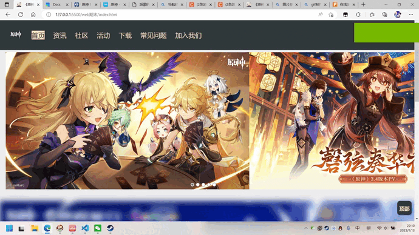可以显示当前所处页面的导航栏，无需依靠网页返回功能即可切换页面，通过display：inline实现，原本希望做出导航栏随页面滚动的效果，但是css写太乱，失败后放弃

制作了一个手动滚动图片的模块，缺点是使用了input type radio，没有任何美化，原本想至少增大按钮尺寸，但没有实现
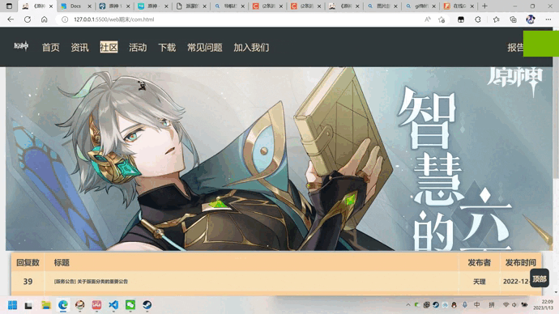一个可以返回到顶部的模块，用锚点定位
“资讯”页：

由于排版设计将二级导航栏放在了侧边栏而非主导航栏，应用了一定动画效果，使用了锚点定位。
一
级与二级导航栏放置于不同div，将二级导航栏的width设置为0，满足hover条件时将width正常设置
配合transition来实现动画效果。
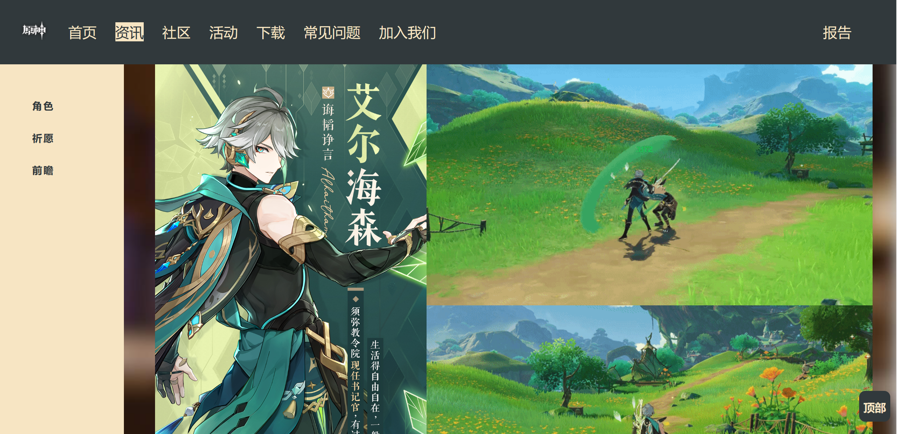
图片的排版使用了float left实现
“社区”页：
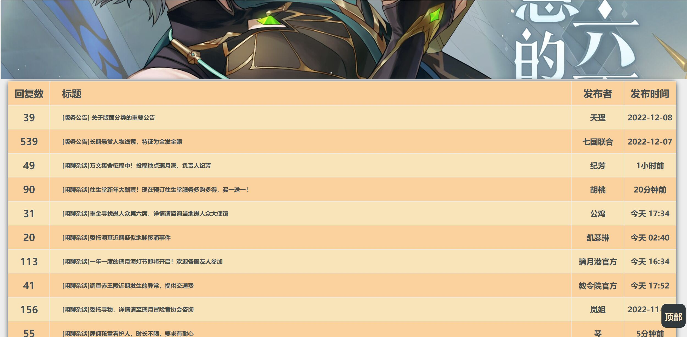主要使用了table元素
“活动”页：
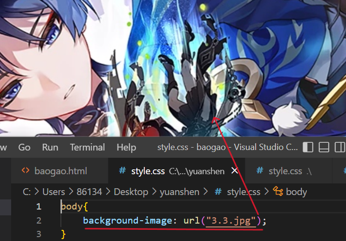 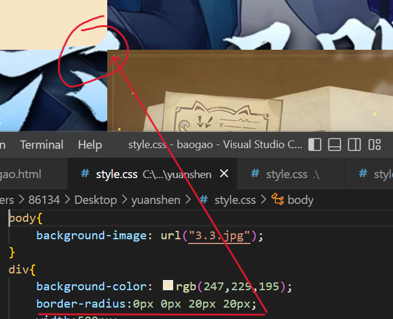第一张网页做得略微有些不尽人意，为数不多的可以拿出来提的就只有使用了背景图片和为了美观的圆角处理
“下载”页：
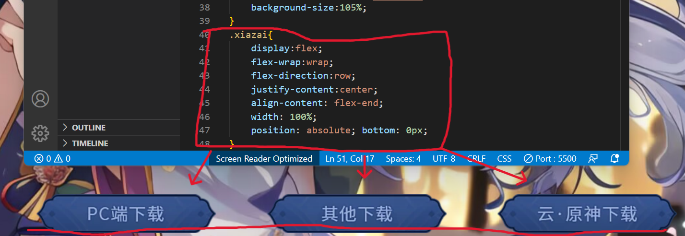将三个图片作为三个区块，先横向置中，再纵向置于末尾，从而达到将三个图片置于屏幕中下位置的目的，更加美观
同时将三个图片加上超链接，以体现其功能性：并使用hover使其在有鼠标停留时略微改变透明度，以得到反馈，提升使用体验
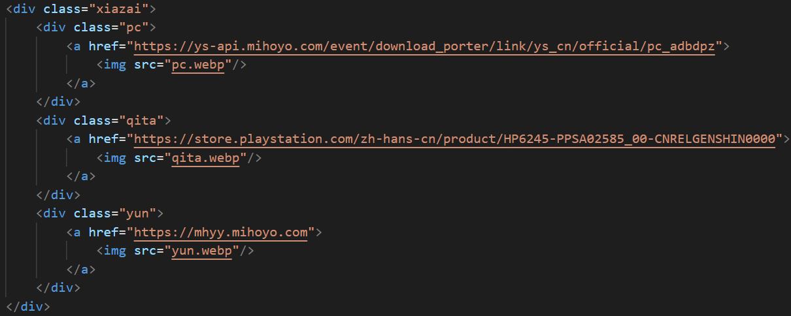
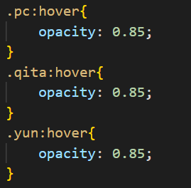
“加入我们”页：
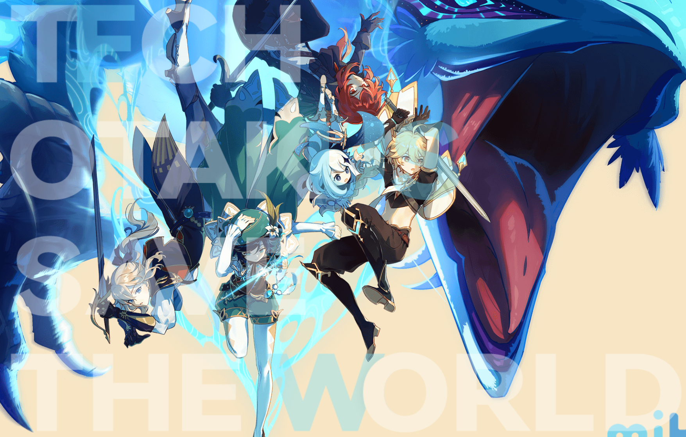 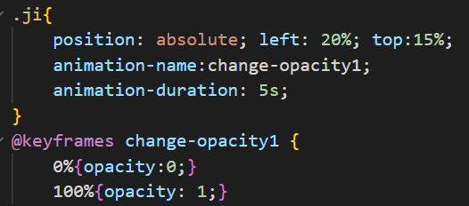开屏使用keyframes播放动画，使TECH OTALUS SAVE THE WORLD慢慢显现出来，最后定在界面当中
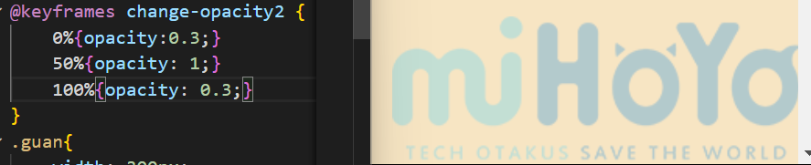 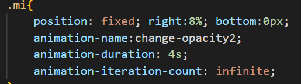
右下角同样使用keyframes播放循环动画，使“mihoyo”logo体现出呼吸灯般的感觉，同时使用position：fixed将其固定在屏幕中，使屏幕不那么单调
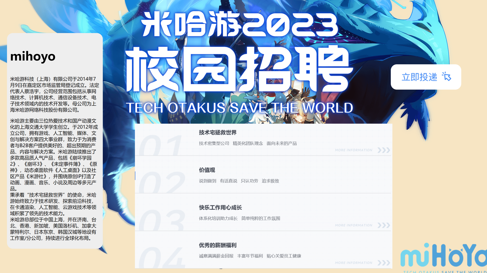
下拉后映入眼帘的是mihoyo公司相关概况及入职宣传，右上方为一个超链接按键，填补空白的同时增添功能性
| 自我评价(组员① |
|---|
| 我在这次作业中负责了“首页”，“咨询”，“社区”，“常见问题”网页的制作，感觉到自己的能力与想象力不足，做不出优秀的页面美化与排版，很多小细节做不到满意的 地步，还是能力不足的问题。不过在这次作业中更加地熟悉了html与css，较之前有了长足的进步。 |
| 自我评价（组员② |
| 在此次作业当中，我主要负责的是网页“活动”、“下载”和“加入我们”，由于对知识点不太熟悉，所以在制作第一张网页“活动”时调用的知识点过少，显得网页比较单调，而且由于第一次使用背景图片，使用的较为拘束 （这一点可以由与“加入我们”（除报告外最后做的一张网页）的对比中看出来）；按制作时间，第二张网页为“下载”，做这张网页是由于一时兴起，学习时发现可以利用“检查”查看别的网页的HTML、css，从而任意获 取图片，就萌生了做网页时用上这些图片的想法，但因题材限制，“下载”无法增添其他更多内容，使得网页较为简洁；写最后的“加入我们”时，由于前面两张写的不是很令自己满意，就重新大概的温习了下知识点，使 用了动画和背景固定等标签，使得“加入我们”与其他两个网页有较大差别（个人感觉） |